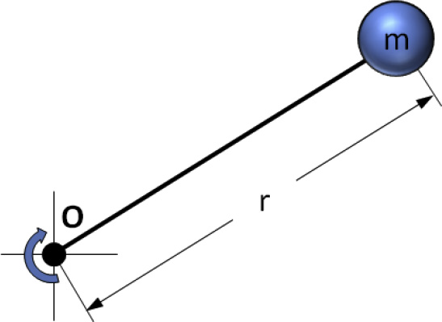

Weight and Balance Theory Manual
This is a theory manual for weight and balance analysis.
It is written by referring to the books:
[1] FAA, “Weight and Balance Handbook”
[2] Raymer, “Aircraft Design”
[3] Gudmundsson, “Aircraft Design”
[4] NASA, “NDARC NASA Design and Analysis of Rotorcraft,”
[5] Egbert, Torenbeek “ADVANCED AIRCRAFT DESIGN,”
Weight and Balance
Weight and center of gravity directly influence an aircraft’s stability and performance. Therefore, the following points must be considered when designing an aircraft:
Comply with relevant FAA and EASA certification requirements.
Determine the maximum allowable weight based on the lift provided by the wings (or rotor) under operating conditions, ensuring the aircraft’s structural strength can safely accommodate it.
Carefully establish the ideal center of gravity (CG) for operation, then derive the allowable CG range so that it remains within this limit throughout operation.
Accordingly, this module supports the design process by predicting the weight of each aircraft component. Based on these predictions, it calculates both the center of gravity and the Moment of Inertia, enabling more efficient evaluation and management of an aircraft’s stability and performance.
Goal of Weight and Balance
Predict the weight of each aircraft component to determine compliance with FAA/EASA certification requirements and verify safe operational limits.
Calculate the aircraft’s center of gravity (CG) to ensure it remains within the safe operating range.
Compute stability-related moments of inertia (MOI) to provide data demonstrating the aircraft’s safe and stable operation.
Weight and Balance Structure (LV.1)
Aircraft Weight (LV.1)
Aircraft Arm (LV.1)
Aircraft Moment (LV.1)
Aircraft Center of Gravity (LV.1)
Basic Weight and Balance Equation (LV.2)
Weight Breakdown and Calculation (LV.1)
Raymer Weight Estimation Method (LV.2)
Torenbeek Weight Estimation Method (LV.2)
USAF Weight Estimation Method (LV.2)
AFDD Weight Estimation Method (LV.2)
Aircraft Weight (LV.1)
Description:
Weight is a major factor in airplane construction and operation, and it
demands respect from all pilots and particular diligence by all
maintenance personnel. Excessive weight reduces the efficiency of an
aircraft and the safety margin available if an emergency condition should
arise.
When an aircraft is designed, it is made as light as the required structural strength allows, and the wings or rotors are designed to support the maximum allowable weight. When the weight of an aircraft is increased, the wings or rotors must produce additional lift and the structure must support not only the additional static loads, but also the dynamic loads imposed by flight maneuvers. For example, the wings of a 3,000-pound airplane must support 3,000 pounds in level flight, but when the airplane is turned smoothly and sharply using a bank angle of 60 degree, the dynamic load requires the wings to support twice this or 6,000 pounds.
Severe uncoordinated maneuvers or flight into turbulence can impose dynamic loads on the structure great enough to cause failure. In accordance with Title 14 of the Code of Federal Regulations(14 CFR) part 23, the structure of a normal category airplane must be strong enough to sustain a load factor 3.8 times its weight. Every pound of weight added to a normal category aircraft requires that the structure be strong enough to support 3.8 pounds. An aircraft operated in the utility category must sustain a load factor of 4.4 times its weight, and acrobatic category aircraft must be strong enough to withstand 6.0 times their weight.
Aircraft Arm (LV.1)
The term arm, typically measured in inches, refers to the distance between the center of gravity (CG) of a component and the chosen datum. If a component’s CG lies ahead of or to the left of the datum, its arm is negative (-); if it is behind or to the right, the arm is positive (+). Placing the datum forward of the entire aircraft means all arms are positive, which helps minimize errors in calculation.
During the design process, engineers define the aircraft’s maximum weight and allowable CG range in inches from the reference plane (the datum). In some designs, this range is stated as a percentage of the mean aerodynamic chord (MAC), where the leading edge is located a specified distance from the datum.
The designer can position the datum at any convenient reference point, such as the leading edge of the wing or a fixed distance from a clearly identifiable location. A common choice is to place the datum a known distance forward of the aircraft—measured in inches from, for example, the nose, the wing’s leading edge, or the engine firewall. This approach ensures consistent, simplified weight and balance calculations.
Aircraft Moment (LV.1)
Description:
A moment is a force that tries to cause rotation, and is the product
of the arm, in inches, and the weight in pounds. Moments are generally
expressed in pound-inches (lb-in) and may be either positive or
negative. Figure shows the way the algebraic sign of a moment is derived.
Positive moments cause an airplane to nose up, while negative moments
cause it to nose down.
Aircraft Center of Gravity (LV.1)
Description:
Weight and balance problems are based on the physical law of the lever.
This law states that a lever is balance when the weight on one side of
the fulcrum(a pivot point for the lever) multiplied by its arm is equal
to the weight on the opposite side multiplied by its arm. In other words,
the lever is balanced when the sum of the moments about the fulcrum is
zero. This is the condition in which the positive moments(those that try
to rotate it counterclockwise). In an aircraft, the balance point is
referred to as the CG.
One of the easiest ways to understand weight and balance is to consider a lever with weight placed at various locations. The balance point or CG of the lever can be changed by either moving the weights closer or farther from the fulcrum or by increasing or decreasing the weights. The balance point or CG of a lever may be determined by using these four steps:
Measure the arm of each weight in inches from the datum.
Multiply each arm by its weight in pounds to determine the moment in pound-inches of each weight.
Determine the total of all weights and of all the moments. (Disregard the weight of the lever)
Divide the total moment by the total weight to determine the balance point.
In figure, the datum is located off the lever to the left of weight A. Using the information provided in figure
determine the balance point by making a chart like the one in the below figure.
As noted in the above figure, A weighs 100 pounds and is 50 inches from the datum; B weighs 100 pounds and is 90 inches from the datum; C weighs 200 pounds and is 150 inches from the datum. The total of the weights is 400 pounds, and the total moment is 44,000 lb-in.
Determine the balance point by dividing the total moment by the total weight. A balance point is equal to the CG and can be mathematically written as:
To prove this is the correct balance, move the datum to a location 110 inches to the right of the original datum and determine the arm of each weight from this new datum. Then, make a new chart similar to the one in table. If the balance point is correct, the sum of the moments is zero.
The lever is balanced when the sum of the moments is zero. The location of the datum used for determining the arms of the weights is not important; it may be in various locations, but all of the measurements must be made from the same datum location.
Basic Weight and Balance Equation (LV.2)
The following formulas can be used to determine the distance weight must be shifted to obtain a desired change in the CG location. The equation can also be rearranged to find the amount of weight required to be shifted to move the CG to a desired location, to find the distance the CG is moved when a specified amount of weight is shifted, or to find the total weight that would allow shifting a specified amount of weight to move the CG a given distance.
Weight Breakdown and Calculation (LV.1)
Description:
This aircraft design features several vital sections and subsystems, each playing a crucial role in the overall performance and functionality of the vehicle. The breakdown is as follows:
Aircraft Components:
Structure:
Wing: Provides lift and supports the propulsion units.
Fuselage: Houses the cockpit, passenger cabin, and cargo space.
Landing Gear: Supports the aircraft during takeoff, landing, and taxiing.
Empennage: Comprises the tail assembly, including the vertical and horizontal stabilizers, aiding in stability and control.
Propulsion:
Motor: Powers the propellers to generate thrust.
Inverter: Converts DC power from the battery to AC power for the motor.
Converter: Regulates the voltage supplied to the motor.
Propeller: Converts rotational energy from the motor into thrust.
Energy:
Battery: Stores and supplies electrical energy to the propulsion system.
TMS (Thermal Management System): Regulates the temperature of various components, especially the battery and motors, to ensure optimal performance and safety.
Payload:
Includes the interiors, such as passenger seats, cargo space, and other items contributing to the aircraft’s carrying capacity.
Miscellaneous:
Control Systems: These include avionics and flight control systems necessary for the operation and navigation of the aircraft.
Installation: Refers to integrating and assembling all components into a cohesive and functional aircraft.
In fact, the weightof the propulsion system, excluding the energy source required, was included as the empty weight.
Empty Weight
Structure weight : airframe, motor boom
Propulsion weight : motor, propeller, esc
System weight : avionics and electric weight, fuel cell/tank
Energy Source Weight
Battery, (hydrogen)Fuel
Payload
Passengers, Baggage, Camera, etc.
A weight estimation model is a mathematical and empirical method for calculating the mass of each aircraft component and its overall system, derived by analyzing interrelationships among accumulated real flight data and various design parameters (e.g., structural, aerodynamic, and propulsion factors). By using this model from the earliest stages of development, engineers can more accurately predict the expected weight range, thereby enhancing both safety and performance.
The basis for the aircraft weight estimation model is the ‘Aircraft Statistical Weights Method’ in Raymer’s aircraft design book. Other aircraft weight estimation methods, such as Egbert Torenbeek’s method in “ADVANCED AIRCRAFT DESIGN,” the “USAF” method, and NASA’s AFDD Weight Models method in “NDARC NASA Design and Analysis of Rotorcraft,” can also be selected for calculation.
In Weight module, the Raymer Weight Estimation Method is used for GA (general aviation) aircraft, the USAF Weight Estimation Method for fighter jets, the Torenbeek Weight Estimation Method for transport aircraft, and the AFDD Weight Estimation Method for tiltrotor and tiltwing aircraft.
Raymer Weight Estimation Method (LV.2)
Main Wing Weight Formula
Where,
\(S_w\) : Trapezoidal wing area
\(W_{fw}\) : Weight of fuel in wing
\(A\) : Aspect ratio
\(\Lambda\) : Wing sweep at 25% MAC
\(q\) : Dynamic pressure at cruise
\(\lambda\) : Taper ratio
\(t/c\) : Thickness to chord ratio
\(N_z\) : Ultimate load factor; \(= 1.5\times limit\;load\;factor\)
\(W_{dg}\) : Flight design gross weight
Horizontal & Vertical Tail Weight Formulas
Where,
\(N_z\) : Ultimate load factor; \(= 1.5\times limit\;load\;factor\)
\(W_{dg}\) : Flight design gross weight
\(q\) : Dynamic pressure at cruise
\(S_{ht}\) : Horizontal tail area
\(S_{vt}\) : Vertical tail area
\(\Lambda_{ht}\) : Horizontal tail sweep at 25% MAC
\(\Lambda_{vt}\) : Vertical tail sweep at 25% MAC
\(t/c\) : Thickness to chord ratio
\(A\) : Aspect ratio
\(\lambda_{ht}\) : Horizontal tail taper ratio
\(\lambda_{vt}\) : Vertical tail taper ratio
\(H_t/H_v\) : 0.0 for conventional tail; 1.0 for T-tail
Fuselage Weight Formula
Where,
\(S_f\) : Fuselage wetted area
\(L_t\) : Tail length
\(N_z\) : Ultimate load factor; \(= 1.5\times limit\;load\;factor\)
\(W_{dg}\) : Flight design gross weight
\(q\) : Dynamic pressure at cruise
\(W_{press}\) : Weight penalty due to pressurization
\(L\) : Fuselage structural length
\(D\) : Fuselage structural depth
Landing Gear Weight Formula
Where,
\(W_l\) : Landing design gross weight
\(N_l\) : Ultimate landing load factor; \(= N_{gear}\times1.5\)
\(L_m\) : Extended length of main landing gear
\(L_n\) : Extended nose gear length
Engine Weight Formula
Where,
\(W_{en}\) : Engine weight
\(N_{en}\) : Number of engines
Fuel System Weight Formula
Where,
\(V_i\) : Integral tanks volume
\(V_t\) : Total fuel volume
\(N_{en}\) : Number of engines
\(N_t\) : Number of fuel tanks
Flight Controls Weight Formula
Where,
\(L\) : Fuselage structural length
\(B_w\) : Wing span
\(N_z\) : Ultimate load factor; \(= 1.5\times limit\;load\;factor\)
\(W_{dg}\) : Flight design gross weight
Avionics Weight Formula
Where,
\(W_{uav}\) : Uninstalled avionics weight
Electrical System Weight Formula
Where,
\(W_{fuel\,system}\) : Fuel system weight
\(W_{avionics}\) : Avionics weight
Torenbeek Method (LV.2)
Main Wing Weight Formula
Where,
\(W_{mainwing}\): Weight of the main wing in pounds (converted to kilograms)
\(W_{dg}\): Design gross weight of the aircraft
\(b_{wing}\): Span of the wing
\(\Lambda_{C2}\): Sweep angle at the half chord
\(N_z\): Load factor
\(S_{wing}\): Wing planform area
\(t_{max}\): Maximum wing thickness (assumed)
Horizontal/Vertical Tail Weight Formula
Where,
\(W_{tailwing}\): Weight of the horizontal or vertical tail in pounds (converted to kilograms)
\(N_z\): Load factor
\(S_{stab}\): Stabilizer planform area
Fuselage Weight Formula
Where,
V_d: Desing dive speed
L_{fus}: Fuselage length
W_{fus}: Fuselage width
H_{fus}: Fuselage height
S_{fus}: Wetted area of the fuselage
USAF Method (LV.2)
Main Wing Weight Formula
Where,
\(W_{mainwing}\): Weight of the main wing in pounds (converted to kilograms)
\(N_z\): Load factor
\(W_{dg}\): Design gross weight of the aircraft
\(AR_{wing}\): Aspect ratio of the wing
\(\Lambda_{C4}\): Sweep angle at quarter chord
\(S_{wing}\): Wing area in square feet
\(taper_{wing}\): Wing taper ratio
\(t/c_{wing}\): Thickness-to-chord ratio
\(V_H\): Horizontal tail volume coefficient
Horizontal Stabilizer Weight Formula
Where,
\(W_{hstab}\): Weight of the horizontal stabilizer in pounds (converted to kilograms)
\(N_z\): Load factor
\(W_{dg}\): Design gross weight of the aircraft
\(S_{hstab}\): Horizontal stabilizer area in square feet
\(l_{hstab}\): Horizontal stabilizer arm length
\(b_{hstab}\): Horizontal stabilizer span
\(t/c_{hstab}\): Thickness-to-chord ratio
Vertical Stabilizer Weight Formula
Where,
\(W_{vstab}\): Weight of the vertical stabilizer in pounds (converted to kilograms)
\(N_z\): Load factor
\(W_{dg}\): Design gross weight of the aircraft
\(F_{tail}\): Tail fin factor (assumed to be 0 in this case)
\(S_{vstab}\): Vertical stabilizer area in square feet
\(b_{vstab}\): Vertical stabilizer span
\(t/c_{vstab}\): Thickness-to-chord ratio
Fuselage Weight Formula
Where,
\(AR_{wing}\) : Aspect ratio of the wing
\(\Lambda_{C4}\) : Sweep angle at quarter chord
\(S_{wing}\) : Wing area
\(taper_{wing}\) : Wing taper ratio
\(t/c_{wing}\) : Thickness-to-chord ratio
\(V_H\) : Horizontal tail volume coefficient
\(L_{fus}\), \(W_{fus}\), \(H_{fus}\) : Fuselage dimensions
Where,
\(W_{fuselage}\): Weight of the fuselage in pounds (converted to kilograms)
\(N_z\): Load factor
\(W_{dg}\): Design gross weight of the aircraft
\(L_{fus}\): Fuselage length (converted to feet)
\(W_{fus}\): Fuselage width (converted to feet)
\(H_{fus}\): Fuselage height (converted to feet)
\(V_H\): Design speed (converted to knots)
AFDD Weight Models (LV.2)
Main Wing Weight Formula
Where,
\(W_{mainwing}\): Weight of the main wing in pounds (converted to kilograms)
\(W_{sdg}\): Structural design weight (45% of the total weight)
\(\Lambda_{C2}\): Sweep angle at half chord
\(N_z\): Load factor
\(S_{wing}\): Wing planform area in square feet
\(AR_{wing}\): Aspect ratio of the wing
\(taper_{wing}\): Wing taper ratio
\(t/c_{wing}\): Thickness-to-chord ratio
\(b_{fold}\): Foldable wing span fraction
Horizontal Stabilizer Weight Formula
Where,
\(W_{hstab}\): Weight of the horizontal stabilizer in pounds (converted to kilograms)
\(S_{hstab}\): Horizontal stabilizer planform area in square feet
\(AR_{hstab}\): Horizontal stabilizer aspect ratio
Vertical Stabilizer Weight Formula
Where,
\(W_{vstab}\): Weight of the vertical stabilizer in pounds (converted to kilograms)
\(f_{tr}\): Tail fin factor (assumed to be 1 in this case)
\(S_{vstab}\): Vertical stabilizer planform area in square feet
\(AR_{vstab}\): Vertical stabilizer aspect ratio
Fuselage Weight Formula
Where,
\(W_{fuselage}\): Weight of the fuselage in pounds (converted to kilograms)
\(f_{ramp}\): Ramp factor (assumed to be 1)
\(W_{dg}\): Design gross weight of the aircraft
\(N_z\): Load factor
\(S_{fus}\): Wetted area of the fuselage in square feet
\(L_{fus}\): Fuselage length in feet
Moment of Inertia Calculation (LV.1)
Description:
Any object that rotates about some axis has a tendency to continue that
motion, just like an object moving along a straight path has a tendency
to move along that path. The former is an example of rotational momentum
and the latter of linear momentum. Unless acted on by some force, both
will continue this motion indefinitely. The tendency of a rotating body
to continue its motion depends on two properties: its mass and the
distance of its CG from the axis of rotation. This leads to the
definition of \(mass\;moment\;of\;inertia\) as the property of an object
that is to rotational momentum what mass is to linear momentum.
The moment of inertia of a point mass, \(m\), with respect to such an axis is defined as the object’s mass times its distance, \(r\), from the axis squared. (see below figure)

Parallel-axis Theorem (LV.2)
Description:
Consider figure, which shows an arbitrary body rotating about a point other than its CG.
The distance between the CG and the axis of rotation, O, is denoted by \(r_{CG}\). The distance from the axis of rotation to the infinitesimal mass \(dm\) is given by \(r\) and the distance between it and the CG is given by \(r^{'}\). If the moment of inertia must be evaluated for this situation, the moment of inertia is given by the following expression.
Where, \(I_{CG}\) : Moment of inertia of the body about its own CG
\(r^{'}\) : Distance from CG to an infinitesimal mass \(dm\)
\(r_{CG}\) : Distance from the reference point O to the CG of the body
\(m\) : The mass of the body
This equation is referred to as the \(parallel-axis\;theorem\). A more ractical form of it is shown below:
Where, \(I_{XX_{CG}},I_{YY_{CG}},I_{ZZ_{CG}}\) : Moment of inertia of the body about its own CG
\(x_{CG},y_{CG},z_{CG}\) : Distance from the reference point O to the CG of the body
Parallel-plane Theorem (LV.2)
The parallel-axis theorem can be extended to the product of inertia in a similar fashion, in which case it is referred to as the parallel-plane theorem.
The derivation is similar to that of the parallel-axis theorem.